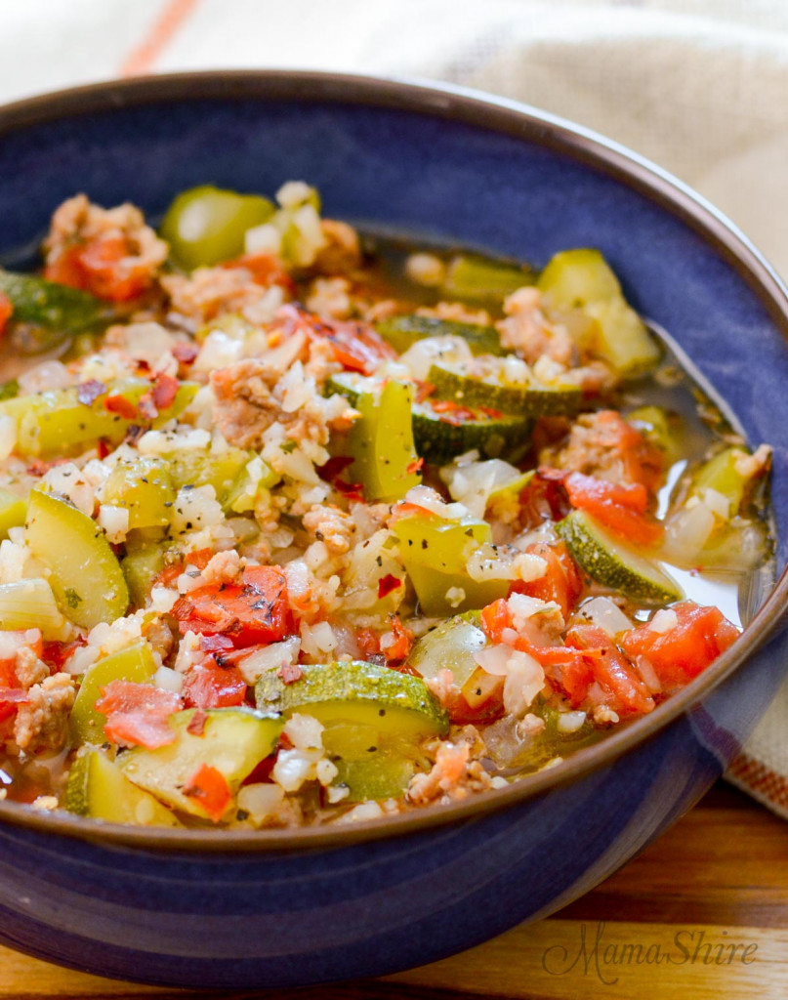
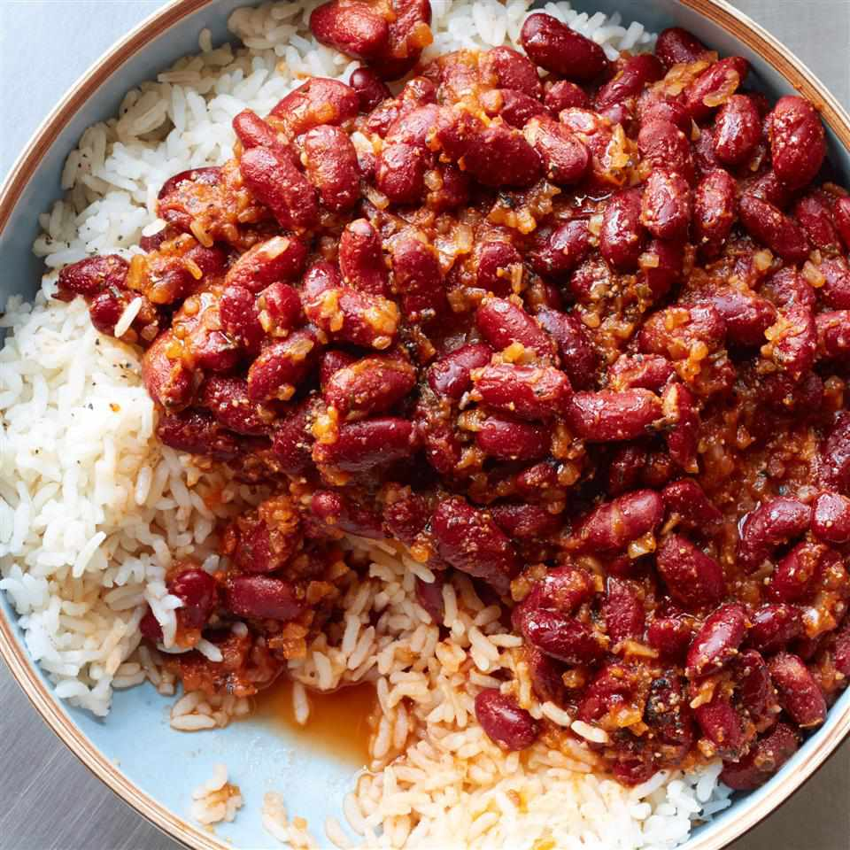
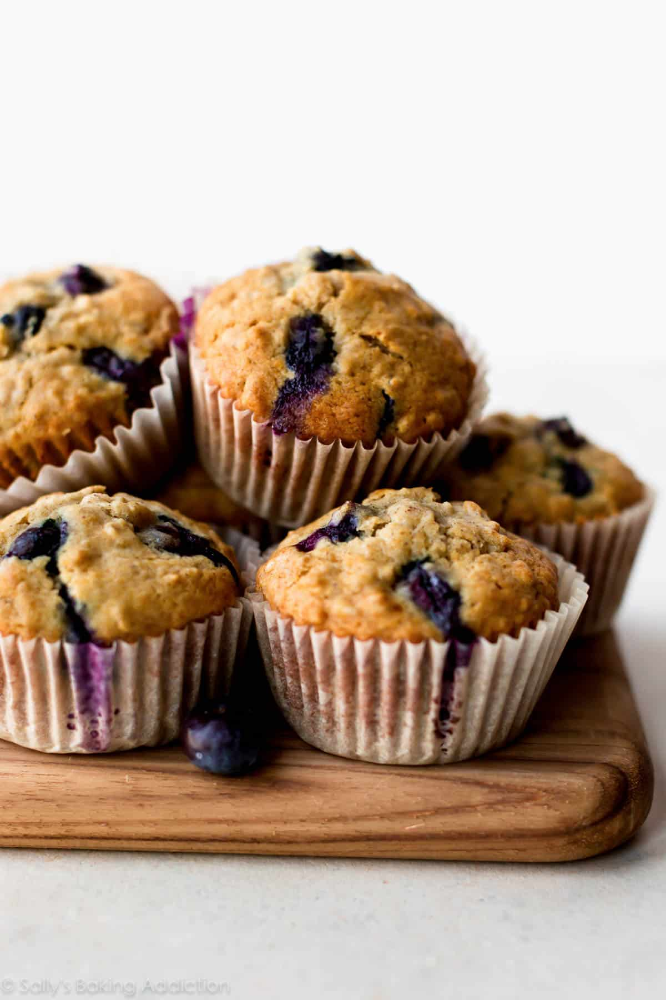

Slow Cooker Black Bean Soup

Zucchini and Rice Stew
Paprika Mashed Potatoes

Red Beans and Rice

Blueberry Oat Muffins
Slow Cooker Black Bean Soup
Ingredients
- 1 Onion, chopped
- 2 Red Bell Peppers, cored and chopped
- 2 Carrots, chopped
- 5 Garlic Cloves, minced
- 1 Jalapeno Pepper, seeded and diced
- 4 Cups of (good quality) Vegetable Broth
- 4 15 oz. cans of Black Beans, rinsed and drained
- 1 can of Corn, drained
- 1 can of Green Chilis (Mild), drained and rinsed
- 1 Bay Leaf
- 2 tsps. of Ground Cumin
- 2 tsps. of Chili Powder
- 2 tsps. of Pink Sea Salt
- 1/2 tsp. of Cayenne
Instructions
- Combine all ingredients in slow cooker bowl/Instapot, and stir to combine
- Cook on high for 4 hours
- Remove the Bay Leaf before eating (if possible)
Zucchini and Rice Stew
Ingredients
- 8 (medium) Zucchinis, sliced and quartered
- 1 cup of Brown Rice, cooked
- 4 Garlic Cloves, minced
- 1 28 oz. can of Chopped Canned Tomato, drained
- 1 6 oz. can of Tomato Paste
- 2 Cups of (good quality) Vegetable Broth
- 4 Tbsp. of Lemon Juice
- 1 tsp. of Pink Sea Salt
- 1/2 tsp. of Black Pepper
Instructions
- Sauté the minced Garlic Cloves (for Instapot, Sauté on "Normal" heat setting)
- Add all other ingredients
- Bring everything to boil (for Instapot, Sauté on "More" heat setting until it starts to boil)
- Cover and simmer for 40 minutes (for Instapot, keep lid removed and Slow Cook on "Less" heat setting for 40 minutes (stir occasionally))
- (Optional, if too watery) Remove lid and let simmer for longer to let sauce thicken (for Instapot, keep lid removed and use the "Keep Warm" setting)
Paprika Mashed Potatoes
Ingredients
- 2 lbs. of cooked (no peeling necessary) Yukon Gold Potatoes (cut potatoes in half lengthwise and then into 1/4 inch silces. Rinse well to wash off the starch)
- 1 Large Yellow Onion, chopped
- 1/2 tsp. and 1/4 tsp. of Pink Sea Salt
- 1/4 tsp. of Black Pepper
- 3/4 cups (or 1 1/2 cups) of Water
- 1/4 tsp. of Sweet Paprika
- 1 Tbsp. of fresh Chives
Instructions
- Sauté onions with 1/4 tsp. of Salt, until nicely browned (approx. 18 min)
- Remove onions and set them aside
- Put potatoes in a Dutch Oven with 3/4 cup of water and 1/2 tsp. of Salt (for Instapot, put Potatoes in the Streamer Basket, and add 1 1/2 cups to bottom of the pot)
- Bring water to boil without the lid, then reduce the heat to Simmer and put on the lid (for Instapot, Pressure Cook for 4 minutes on High Pressure)
- After 20 mins, reduce heat to Low (for Instapot, after the Timer beeps, wait 5 minutes then do a Quick Pressure Release)
- Mash the Potatoes (for Instapot, put the potatoes in bottom of the pot (with the water), mash them, and stir in 1/2 tsp. of Salt)
- Add into the pot the cooked Onions, Paprika, 1/4 tsp. of Salt, and 1/4 tsp. of Pepper, and stir everything together
- Add fresh Chives
- (Optional) Add extra Salt and Pepper to taste
- (Optional) Dress with Sprinkled Paprika and Chives
Red Beans and Rice
Ingredients
- 1 1/2 cups of dry Small Red Beans (NOT KIDNEY BEANS)
- 1 1/2 cups of dry Brown Rice
- 1 medium Yellow Onion, diced
- 1 medium Green (or Red) Bell Pepper, diced
- 3 stalks of Celery, diced
- 3 or 4 Garlic Cloves, minced
- 1 1/2 Tbsps. of Cajun Seasoning (with Sodium) OR 1/2 tsp. of Pink Sea Salt
- 2 tsps. of Dry Thyme
- 2 tsps. of Parsley
- 4 cups of Vegetable Broth
- 1 1/2 cups of Water
- 1 medium Lemon, juiced
Instructions
- Rinse and sort out any debris from the dry Red Beans and dry Brown Rice, then set them aside
- Using the Instapot, press the sauté setting, and wait for it to read "Hot"
- Sauté the diced Onions, Celery, and Bell Peppers for 6 minutes
- Stir in the Garlic, Cajun Seasoning/Salt, Thyme, and Parsley
- Stir for 30 more seconds, stirring frequently to prevent burning
- Pour in 3 Tbsps. of the total Vegetable Broth to deglaze the pot and remove any stuck bits
- Add the remaining ingredients (the remaining Vegetable Broth, Water, dried Red Beans, and dried Brown Rice)
- Do not stir
- Close the lid and Pressure Cook on "High Pressure" for 30 minutes
- After the Instapot does a Natural Release, squeeze in the Lemon and stir everything together
Blueberry Oat Muffins
Ingredients
- 2 Tbsps. of Ground Flaxseed (if you have regular Flaxseed, use the blender to grind it down)
- 1½ cups of Rolled Oats, blended into oat flour
- 1 cup unsweetened Applesauce
- ¾ cup unsweetened Soy Milk (or any plant milk)
- 5 Tbsps. of Water
- 1 tsp. of Baking Powder
- ½ tsp. of Baking Soda
- ¼ tsp. of Pink Sea Salt
- ½ cup of Blueberries (fresh or frozen)
- Strawberry Preserves
Air Fryer Instructions
- Mix ground flaxseed with water and let sit 5 minutes to gel
- Combine the gel with all the other ingredients
- Pour mixture into muffin holders
- AirFry on 325°F for 16 minutes
- Let cool for 5-10 minutes before serving
- Servce with Strawberry Preserves